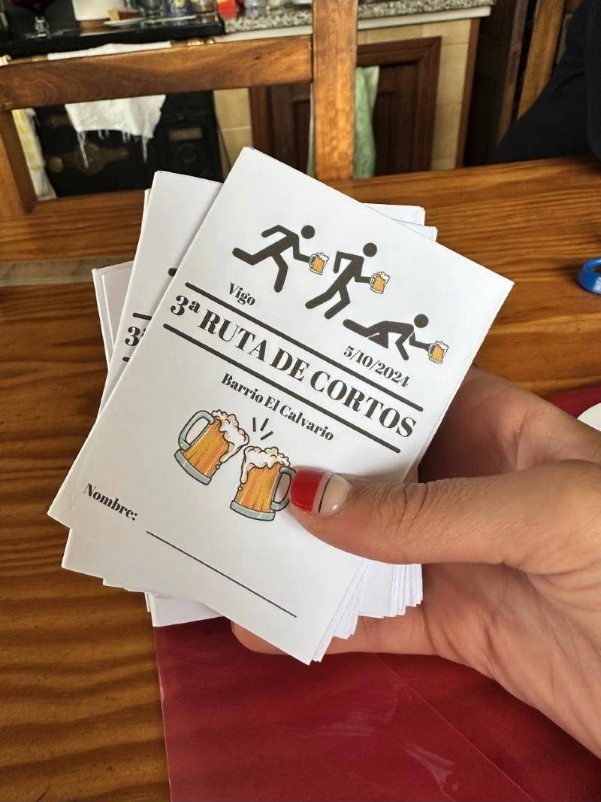
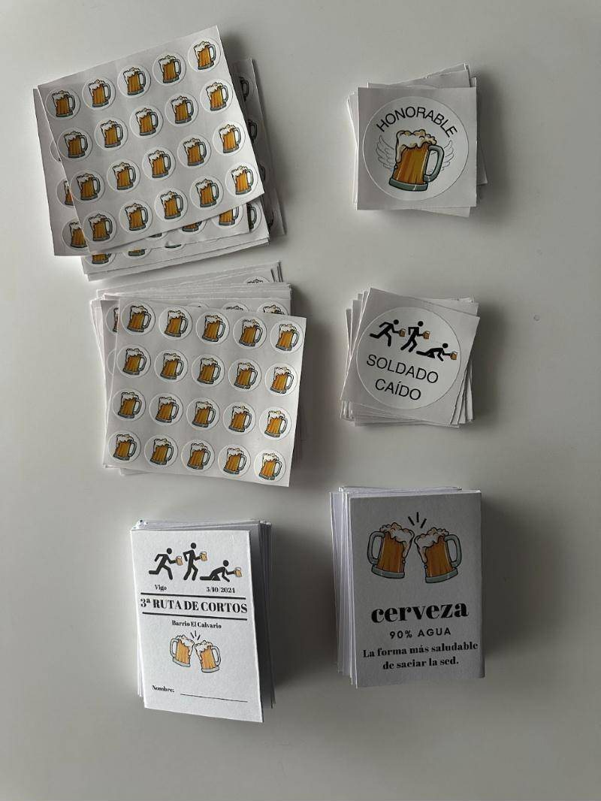
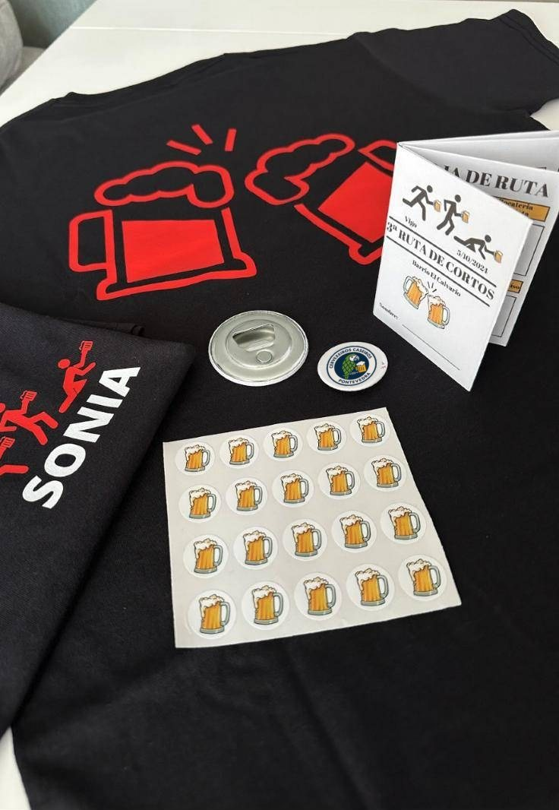
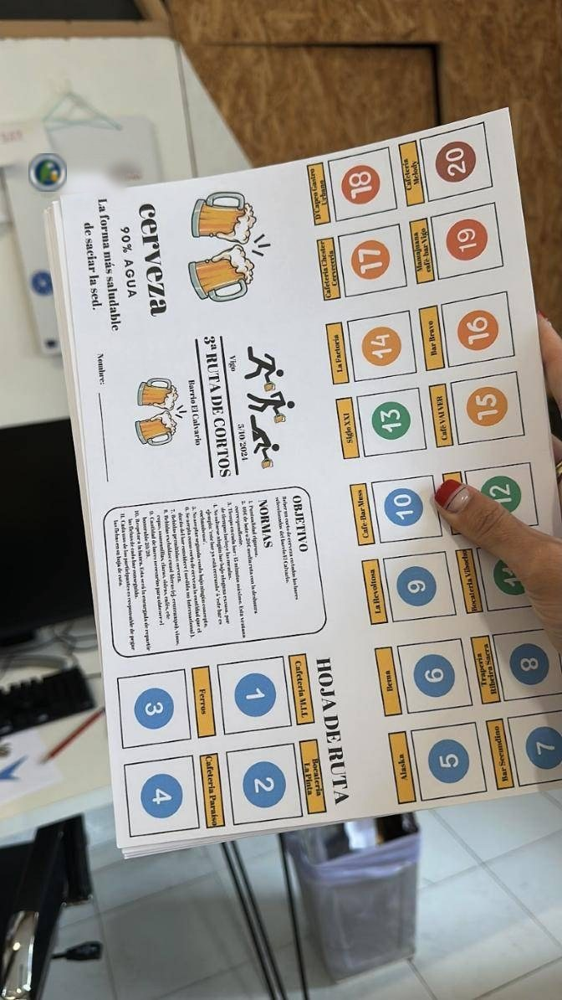
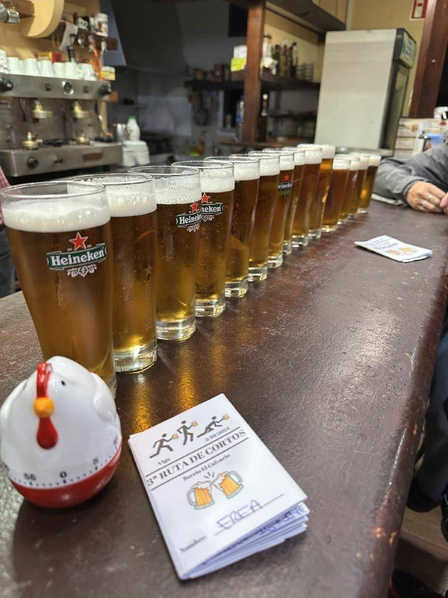

3ª Ruta de Cortos polo Calvario: Vigo a pequenos grolos

O 5 de outubro de 2024 fixemos a 3ª Ruta de Cortos polo Calvario, en Vigo: vinte bares, cartillas, pegatinas, camisetas e unhas normas moi serias.
Hai plans que non necesitan moita explicación, e unha ruta de cortos é un deles: xuntarse cos amigos, ir de bar en bar e tomar en cada un un corto de cervexa, esa medida pequena que permite probar moito sen acabar como o reno da nosa caixa de Nadal.
O sábado 5 de outubro de 2024 celebramos a 3ª Ruta de Cortos, e esta vez o escenario foi o barrio do Calvario, en Vigo. O obxectivo, tal e como dicía a folla de ruta: beber un corto de cervexa en todos os bares seleccionados do barrio. Vinte, nada menos.
O material: unha ruta coma Deus manda
Os días antes da ruta convertéronse nun pequeno taller de manualidades. Cada participante recibiu o seu kit:
- Cartilla co seu nome, a folla de ruta cos 20 bares e as normas.
- Pegatinas de xerras para ir marcando cada parada.
- Dúas pegatinas especiais: «Honorable», para quen completase os 20 bares, e «Soldado caído», para quen quedase polo camiño.
- Camiseta personalizada co seu nome, unha chapa e un abrebotellas.



A ruta e as súas normas
O plan era sinxelo: vinte bares do Calvario, un corto en cada un e unha folla de ruta para non perderse. Bares de toda a vida, bocaterías e cafeterías de barrio, cada un co seu xeito de entender o que é «un corto».
E, como toda ruta que se prece, había normas: puntualidade, un máximo de 15 minutos por bar (de aí o temporizador en forma de galiña), nada de saltarse paradas e só cervexa. Quen completase os vinte levaba o honorable 20/20.

O día da ruta

O resto da tarde queda para a memoria de quen a lembre. Só diremos que a galiña non perdoou nin un minuto.
Por que nos gustan tanto as rutas
Porque son a mellor escusa para coñecer bares de barrio, falar cos que están detrás da barra e comparar cervexas sen présa. E porque, para quen fai cervexa na casa, probar moitas distintas é parte do adestramento. Iso dicimos, polo menos.
Se che apetece vir á próxima, faite socio/a ou síguenos en Instagram para enterarte das próximas saídas.
- #rutas
- #vigo
- #eventos